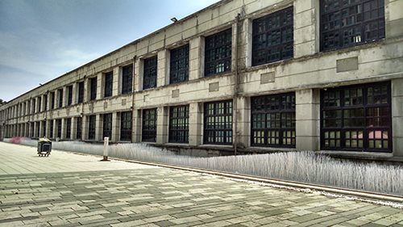
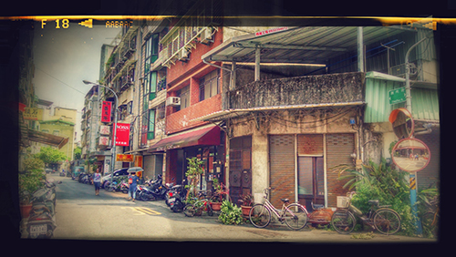
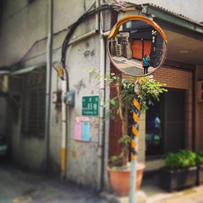
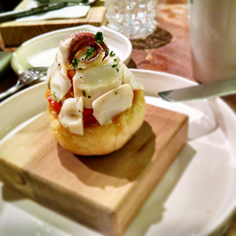
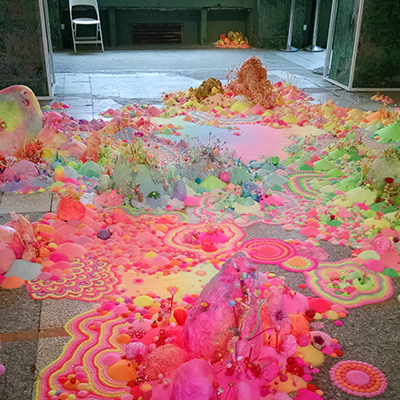
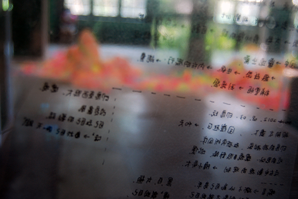

Taiwan \
Taipei / Sept.14
_The island of Taiwan (formerly known as "Formosa") was mainly inhabited by Taiwanese aborigines until the Dutch and Spanish settlement during the Age of Discovery in the 17th century, when Han Chinese began immigrating to the island. In the 1980s and early 1990s, Taiwan evolved into a multi-party democracy with universal suffrage.





